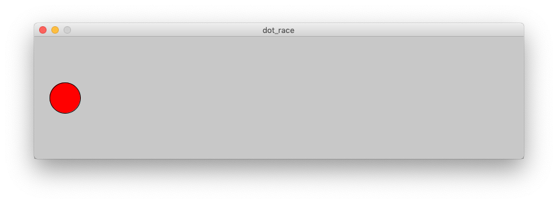

Dot Race

Goal:
Make the dot move across the screen when you press the mouse.
Steps:
- Find the Dot Race recipe program ( dot_race.pde ) and open it using Processing.
- Follow the instructions in the code to make a dot race across the screen.
- Make sure you SAVE YOUR CODE when you are done.